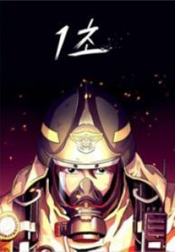
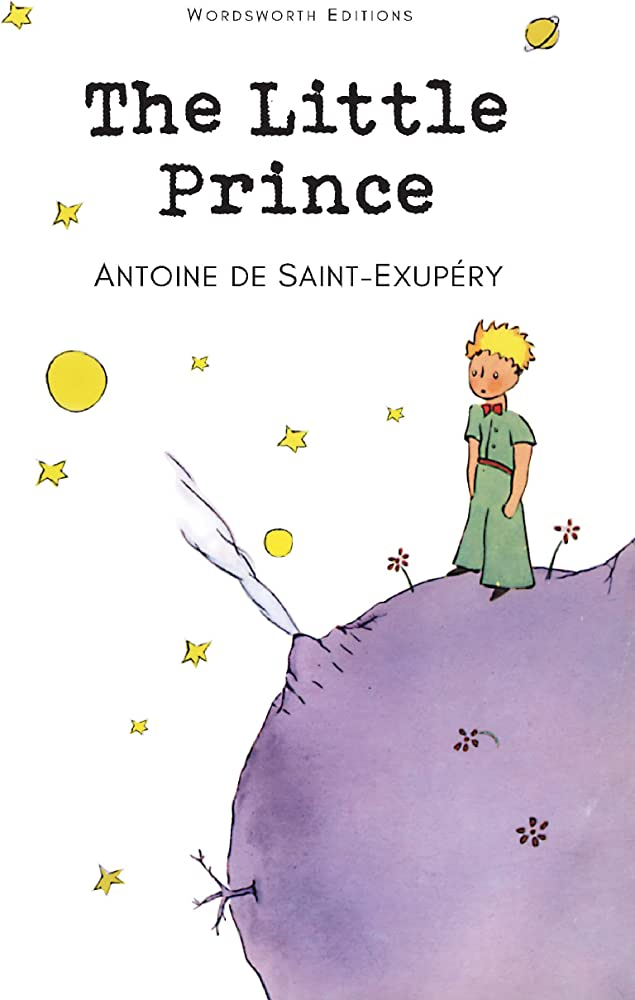

I wanted to take Web Programming and Engineering because I felt like it was very relevant and I also needed to refresh on my web programming abilities. Before applying for Tufts, I used the Odin Project to learn how to do web development. I have some experience with Linux, html, css, and javascript. However, once I started attending Tufts, I completely stopped using it so I need to relearn a lot of things again.
This is one of my favorite restaurants because I love Soon Tofu Soup. They offer a variety of options for the soup and the soups get plenty spicy which I enjoy.

This dish is usually prepared in a hot stone pot. Before eating it, an egg is cracked inside and cooked in the hot soup. It is enjoyed with a bowl of rice on the side and other assorted banchan.
| Book Name | Cover | Author | Summary |
|---|---|---|---|
| 1 Second |  | Sini | A firefighter learns to rescue people as he harnesses his power to briefly see into the future. |
| Flowers for Algernon | Daniel Keyes | A mentally disabled man undergoes an experimental surgery that significantly increases his intelligence, offering profound insights into the human condition and the price of knowledge. | |
| The Little Prince |  | Antoine De Saint-Exupery | A young prince explores various planets and encounters many characters, that give wisdom about life, love, and the importance of seeing with the heart. |
| Fahrenheit 451 | |
Ray Bradbury | A fireman named Guy Montag begins questionning his role in the oppressive society and embarks on a dangerous journey to preserve knowledge and freedom. |